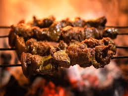

Home
Sekuwa

Sekuwa: Nepali Grilled Meat Skewers
Sekuwa is a popular street food in Nepal, known for its rich flavors and
smoky aroma. These skewered meats, typically made from chicken, goat, or
buffalo, are marinated in a blend of Nepali spices and herbs before being
grilled over an open flame. The marination process ensures that the meat
absorbs the depth of flavors, which are enhanced by the smoky grilling
method. Sekuwa is often served with a side of achar (Nepali pickle) and
salad, making it a delicious and satisfying dish that's perfect for casual
gatherings or celebrations.
The secret to a great Sekuwa lies in its marination. The meat is often
coated with a mixture of yogurt, ginger-garlic paste, cumin, coriander,
turmeric, and other spices like garam masala and fenugreek. This blend
gives the meat its tender texture and bold flavor. Once grilled to
perfection, Sekuwa offers a smoky, slightly charred outer layer with
juicy, tender meat inside. It's one of the quintessential flavors of
Nepali cuisine, loved for its balance of spice, smokiness, and savory
goodness.
Ingredients
-
Meat: Chicken, goat, buffalo, or lamb (cut into small
pieces for skewering)
-
Marinade: Yogurt, ginger-garlic paste, turmeric, cumin,
coriander, and garam masala
-
Spices: Fenugreek, red chili powder, timur (Szechuan
pepper), and salt
-
Herbs: Fresh cilantro, fresh lemon juice, and green
chilies (optional for added heat)
-
Grilling: Mustard oil or ghee (for brushing while
grilling)
-
Sides: Achar (Nepali pickle), fresh salad, or a squeeze
of lime
Preparation Steps
-
Prepare the marinade: In a large bowl, mix together
yogurt, ginger-garlic paste, turmeric, cumin, coriander, garam masala,
fenugreek, red chili powder, timur, and salt. Adjust the spice levels
based on your preference.
-
Marinate the meat: Add the cut pieces of meat into the
marinade, making sure each piece is thoroughly coated. Cover and let the
meat marinate for at least 2 hours, or overnight in the refrigerator for
more flavor.
-
Prepare the skewers: Thread the marinated meat onto
wooden or metal skewers. If using wooden skewers, soak them in water for
30 minutes beforehand to prevent burning.
-
Preheat the grill: Heat your grill to a medium-high
temperature. If using a charcoal grill, let the coals turn white-hot for
an even cook.
-
Grill the Sekuwa: Brush the skewers with mustard oil or
ghee and place them on the grill. Cook for 10-15 minutes, turning
occasionally until the meat is fully cooked and slightly charred on the
outside. The internal temperature should reach 165°F (75°C) for chicken,
or a similar appropriate temperature for other meats.
-
Serve: Once cooked, remove the skewers from the grill
and let them rest for a few minutes. Serve hot with achar, fresh salad,
and a squeeze of lime for extra zing.